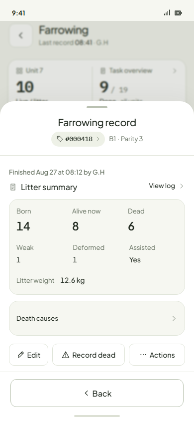
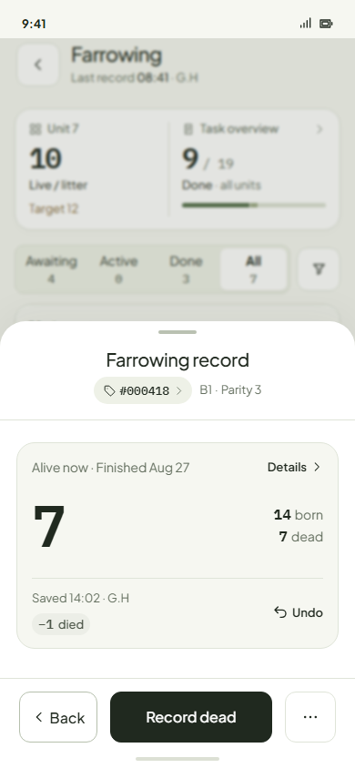
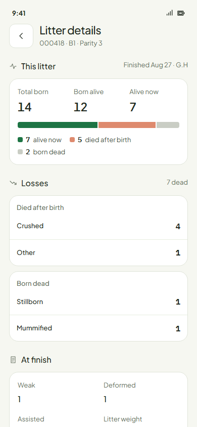
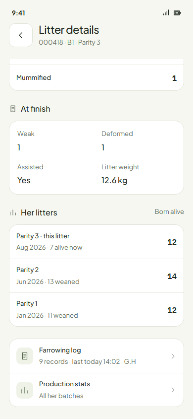

Farrowing · the finished record and Litter details
The drawer is the overview. Details is the depth.
The finished record becomes the same drawer she had while farrowing: one Alive card, and a bar of Back · Record dead · ···. Everything else moves to Litter details, now a page that shows the litter as a picture, the losses by cause, the finish facts and her past litters.
1 · The finished record (overview)


Why this shape
- It is the drawer they already know from farrowing: same card, same bar. Finish farrowing becomes Record dead, the job after Finish.
- One number is big; two sit beside it; the rest is a tap away.
- Weak, deformed, assisted, weight, causes and the log were in the drawer; all of them move to Details.
2 · Litter details (depth, a page)


House patterns used
- Figures as on End task's performance card; facts as on the record today.
- Her litters is the sow page's Production stats, one row per parity.
- The bar's colours passed the colour-blind check (deep green and light warm, ΔE 14 protan), and every part is also labelled.
Your calls
- The finished record's main button is Record dead? Recommend yes: it is the work after Finish.
- Her litters in Litter details: born alive and weaned per parity? Recommend yes; Production stats stays one tap away for everything else.